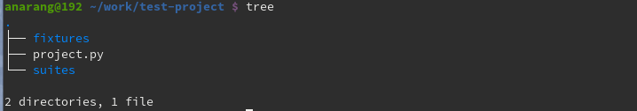
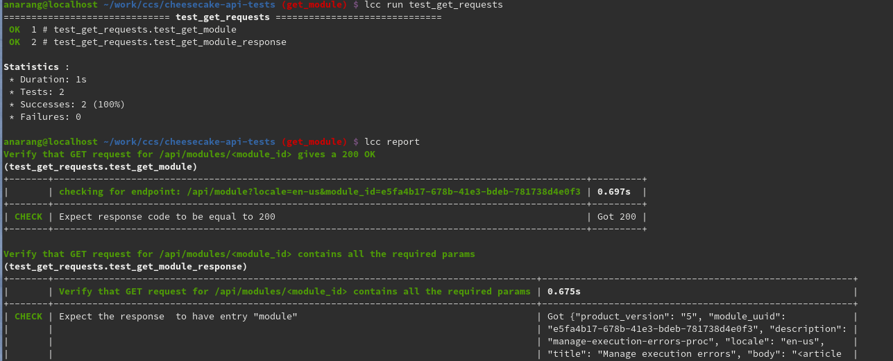

API Testing 101's: Quick and Easy
Anisha Narang
Senior Quality Engineer
Red Hat Inc. |
@anisha_narang
DevConf.CZ, 2020
Agenda
- Overview of REST API
- Introduction to API testing
- Overview of different API testing frameworks
- Introduction to LCC framework(lemoncheesecake)
- Understanding the matchers/assertions available
- Generating awesome reports
- Demo
What is REST API?
API stands for Application Programming Interface. APIs let your product or service communicate with other products and services without having to know how they’re implemented.
REST is an architectural style, or design pattern, for APIs.
REST stands for REpresentational State Transfer. It means when a RESTful API is called, the server will transfer to the client a representation of the state of the requested resource.
The representation of the state can be in a JSON or XML format
-
API endpoint:
An identifier for the resource you are interested in. This is the URL for the resource, also known as the endpoint. -
HTTP method:
The operation you want the server to perform on that resource, in the form of an HTTP method.
GET, POST, PUT and DELETE
What is API Testing?
API Testing is a software testing type that validates the API(Application Programming Interface) of any application.
In short: you send calls to the API and verify the API response.
HTTP methods:
GET
The GET method is used to retrieve information from the given server using a given URI. Provides READ only access to a resource.
POST
The POST method is used to submit an entity to the specified resource, often causing a change in state or side effects on the server.
PUT
Replaces all current representations of the target resource with the uploaded content.
DELETE
The DELETE method deletes the specified resource.
Different API testing frameworks
- Curl
- Postman
- JMeter
- Karate
- Pytest
- but there is more with Python..
- Let's try out some 'lemoncheesecake' ;)
lemoncheesecake: a functional test framework for Python
Getting started
lemoncheesecake can be installed via pip
$ pip install lemoncheesecake
Writing your test suite
Creating a new test project
$lcc bootstrap test-projectCreates a new project directory “myproject” containing one file “project.py” (it contains your project settings) and “suites” and "fixtures" directories for you add your test suites and fixtures.
A suite looks like:
#suites/test_get_request.py
import lemoncheesecake.api as lcc
from lemoncheesecake.matching import *
import requests
SUITE = {
"description": "Tests for GET /api/modules/:module_id:"
}
url = "https://www.example.com/"
module_id = "id123456"
@lcc.test("Verify that GET request for /api/modules/:module_id: gives a 200 OK")
def test_get_module():
lcc.set_step("checking for endpoint: /api/modules/" + module_id)
response = requests.get(url=url + "/api/modules/" + module_id)
check_that("response code", response.status_code, equal_to(200), quiet=False)
@lcc.test("Verify that GET request for /api/modules/:module_id: contains all the required params")
def test_get_module_response():
response = requests.get(url=url + "/api/modules/" + module_id)
result = response.json()
check_that("the response ", result, has_entry("module"))
check_that("the response ", result, has_entry("status"))
check_that("the response ", result, has_entry("message"))
Running the test suite:
$lcc run
Console output look like:
Matchers
The matchers
- equal_to(expected)
- not_equal_to(expected)
- is_true()
- is_false()
- is_dict([expected])
- is_list([expected])
- has_item(expected)
- has_entry(expected_key [,expected_value])
- and there are more...
The matching operations
- check_that(hint, actual, matcher, quiet=False)
- require_that(hint, actual, matcher, quiet=False)
- assert_that(hint, actual, matcher, quiet=False)
data = {"foo": 1, "bar": 2}
check_that("data", data, has_entry("foo", equal_to(1)))
check_that("data", data, has_entry("bar", equal_to(2)))
Fixtures
Logging
- Promises represent the eventual result of an operation.
- Promises are objects. The Promise object is used for asynchronous computations.